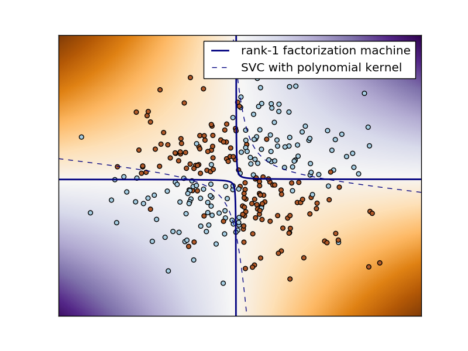

Plots the decision function learned by a factorization machine for a noisy non-linearly separable XOR problem
This problem is a perfect example of feature interactions. As such, factorization machines can model it very robustly with a very small number of parameters. (In this case, n_features * n_components = 2 * 1 = 2 params.)
Example based on: http://scikit-learn.org/stable/auto_examples/svm/plot_svm_nonlinear.html
Python source code: plot_xor.py
print(__doc__)
# Author: Vlad Niculae <vlad@vene.ro>
# License: Simplified BSD
import numpy as np
import matplotlib.pyplot as plt
from sklearn.svm import NuSVC
from polylearn import FactorizationMachineClassifier
xx, yy = np.meshgrid(np.linspace(-3, 3, 500),
np.linspace(-3, 3, 500))
rng = np.random.RandomState(42)
X = rng.randn(300, 2)
y = np.logical_xor(X[:, 0] > 0, X[:, 1] > 0)
# XOR is too easy for factorization machines, so add noise :)
flip = rng.randint(300, size=15)
y[flip] = ~y[flip]
# fit the model
fm = FactorizationMachineClassifier(n_components=1, fit_linear=False,
random_state=0)
fm.fit(X, y)
# fit a NuSVC for comparison
svc = NuSVC(kernel='poly', degree=2)
svc.fit(X, y)
# plot the decision function for each datapoint on the grid
Z = fm.decision_function(np.c_[xx.ravel(), yy.ravel()])
Z = Z.reshape(xx.shape)
Z_svc = svc.decision_function(np.c_[xx.ravel(), yy.ravel()])
Z_svc = Z_svc.reshape(xx.shape)
plt.imshow(Z, interpolation='nearest',
extent=(xx.min(), xx.max(), yy.min(), yy.max()), aspect='auto',
origin='lower', cmap=plt.cm.PuOr_r)
contour_fm = plt.contour(xx, yy, Z, levels=[0], linewidths=2)
contour_svc = plt.contour(xx, yy, Z_svc, levels=[0], linestyles='dashed')
plt.scatter(X[:, 0], X[:, 1], s=30, c=y, cmap=plt.cm.Paired)
plt.xticks(())
plt.yticks(())
plt.axis([-3, 3, -3, 3])
plt.legend((contour_fm.collections[0], contour_svc.collections[0]),
('rank-1 factorization machine', 'SVC with polynomial kernel'))
plt.show()
Total running time of the example: 3.57 seconds ( 0 minutes 3.57 seconds)